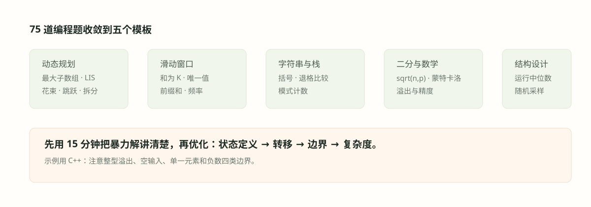

#035. 编程五：二分、开方与蒙特卡洛
先用一个小例走通
求\(\sqrt{2}\)，先知道在[1,2]；取中点1.5，平方2.25太大，改[1,1.5]；再取1.25平方1.5625太小，改[1.25,1.5]。每次区间减半，不靠猜出答案。精度\(\epsilon \)是允许误差，如0.01；停止看区间宽度而非要求浮点平方恰等于2，因为后者可能永远无法发生。

#学习目标：精度、代价与口径
前三章的编程题有一个共同点：答案是精确的，算法只关心快慢。本章加入另一个维度——精度。开方要输出到指定小数位，蒙特卡洛要回答「多少样本才够」，区间计数要处理端点开闭。一旦精度进入题面，三个新习惯必须养成：第一，先问「精度怎么定义」（第 \(p\) 位是截断还是四舍五入）；第二，把「误差减半/缩小十倍」翻译成迭代的次数；第三，浮点类型的有效数字本身只有约 15–16 位十进制，\(p\) 更大时要换整数定点或高精度运算——这三句话正是面试官想听的。
本章的另一半是「看似 DP、实则各有专属模板」的一族题：素数步长走数组的路径 DP、花束收益 DP、青蛙过河的等待最小化、拆分元素使数组非降、按类别加权的产品利润，以及两个方向的区间计数。它们共同示范了量化面试编程题的典型难度：建模不超过动态规划入门，但边界与口径占了一半分数。
单调即可二分；可导且收敛好可用牛顿迭代。开方题把两者的迭代次数差（\(O(\log n + p)\) 对 \(O(\log p)\) 量级）摆在同一道题里。
蒙特卡洛估 π 是「均匀采样 + 拒绝判定」的最小样例；误差按 \(1/\sqrt n\) 衰减，每多一位十进制精度要一百倍样本。
「含 k 个不同值的最短窗口」与 033 章的最长窗口方向相反，收缩条件要反着写；区间计数用端点差分把逐点查询变成前缀和。
#知识点一：开方的三种迭代
题库里同一道「sqrt(number, precision)」出现了三次（源题 3、52、63），例如此题约定 \(\text{sqrt}(3,0)=1\)、\(\text{sqrt}(3,1)=1.7\)、\(\text{sqrt}(3,2)=1.73\)——注意 \(1.732\ldots\) 给出 \(1.73\)，这是截断而非四舍五入。三种方法可作复杂度比较；原资料只要求实现与分析，不据此声称面试官必逐个追问。
实现一：二分区间
平方函数在正半轴单调，所以「找 \(x\) 使 \(x^2 = n\)」可以二分：维护不变量 \(\text{lo}^2 \le n \le \text{hi}^2\)，中点偏小抬 lo、偏大压 hi，直到区间宽度小于 \(\varepsilon\)。取ε可控制根的绝对近似误差，但即使误差小于半个小数刻度，也不能保证跨整数刻度时的截断正确；要精确按p位截断，使用后面例题的整数缩放与整数二分。注意 \(n \lt 1\) 时根落在 \((n, 1)\)，上界必须取 \(\max(1, n)\)，否则区间一开始就错了。
实现二：牛顿迭代
解 \(f(x) = x^2 - n = 0\) 的牛顿法：在当前点作切线，取切线与 \(x\) 轴的交点为下一个近似：
怎么读：每一步把当前猜测换成「它与其倒数对称点 \(\frac{n}{x_t}\) 的平均」。它的收敛是二阶的：记 \(e_t = x_t - \sqrt n\)，则
即误差被平方——粗略地说，正确的小数位数每步翻倍。二分要 \(p\) 位精度得跑 \(O(\log n + p)\) 步，牛顿在进入邻域后只要 \(O(\log p)\) 步量级。代价是对初值与函数性质有要求（本题任意正初值都收敛，是最friendly的场景）。
实现三：逐位生成
先求整数部分（在整数上二分），再从十分位起逐位贪心：对每一位从 9 往 1 试，取最大的使「已确定前缀 + 该位数字」的平方仍不超过 \(n\)。每位至多 9 次试探，总代价 \(O(\log n + 10p)\)，而且它天然产出截断值——正对上 \(\text{sqrt}(3,2)=1.73\) 的口径。全整数实现可以做到任意精度而不受 double 限制，这是它存在的第二个理由。
| 方法 | 每步做什么 | 到 \(p\) 位小数的迭代次数 | 备注 |
|---|---|---|---|
| 二分区间 | 区间减半 | \(O(\log n + p)\) | 只要单调就成立，最稳 |
| 牛顿迭代 | 切线取交点 | 约 \(O(\log p)\)（有效数字翻倍） | 需可导；本题任意正初值收敛 |
| 逐位生成 | 每位试 9…1 | \(O(\log n + 10p)\) | 天然截断口径；整数版可任意精度 |
#知识点二：蒙特卡洛与 1/√n 律
向单位正方形 \([0,1]^2\) 均匀撒 \(n\) 个点，落在四分之一圆 \(x^2+y^2 \le 1\) 内的概率是面积比 \(p = \pi/4\)。统计命中率 \(\hat p = \text{hit}/n\)，就得到 \(\hat\pi = 4\hat p\)。它是一个无偏估计，标准差由二项分布直接给出：
怎么读：\(n = 10^6\) 时标准差约 \(1.6\times 10^{-3}\)——想要第三位小数可信，样本要乘一百倍到 \(10^8\)。这就是蒙特卡洛的 \(1/\sqrt n\) 律：精度线性烧钱，指数烧样本。面试里这行推导比代码更值钱。
一、不要用 rand()：它的周期短、低位质量差，考官听到会皱眉；标准答案是 mt19937 配 uniform_real_distribution。二、固定种子保证可复现——把种子作为参数传入，测试与调参才能重现同一条随机序列。若被追问「怎么降低方差」，答对偶变体（antithetic variates，把每个随机数 \(u\) 与 \(1-u\) 成对使用）或分层采样，各能给出常数因子的改进，但 \(1/\sqrt n\) 的阶不变。
#例题一：sqrt(number, precision) 三合一（源题 3、52、63）
例题 1（源题 C3、C52、C63）：按小数位截断开方，并分析精度与复杂度
输出约定跟随PDF示例。sqrt(3,0)=1、sqrt(3,1)=1.7、sqrt(3,2)=1.73，采用非负数的向下截断，不是四舍五入。precision是小数位数，不是平方残差阈值。为避免浮点根恰在边界附近舍入错误，主实现将十进制输入精确变成分数。
设输入x=A/B，s=10ᵖ。需要整数\(q=\lfloor s\sqrt{x}\rfloor\)，等价于找到最大的q使\(q^2\le\lfloor As^2/B\rfloor\)。在整数上二分后再插入小数点，不调用内置sqrt，也不把近似小数误当作精确截断值。
from decimal import Decimal
def sqrt_digits(number, precision):
"""Return the nonnegative decimal square root, truncated to precision digits."""
if not isinstance(precision, int) or precision < 0:
raise ValueError("precision must be a nonnegative integer")
value = Decimal(str(number))
if not value.is_finite() or value < 0:
raise ValueError("number must be finite and nonnegative")
numerator, denominator = value.as_integer_ratio()
scale = 10 ** precision
target = numerator * scale * scale // denominator
if target == 0:
root = 0
else:
low, high = 0, 1 << ((target.bit_length() + 1) // 2)
while low + 1 < high:
middle = (low + high) // 2
if middle * middle <= target:
low = middle
else:
high = middle
root = low
if precision == 0:
return str(root)
return f"{root // scale}.{root % scale:0{precision}d}"成本。令M=⌊A10²ᵖ/B⌋、b为M的二进制位数。二分做O(b)轮、每轮一次b位整数乘法，所以位复杂度是O(b·Mul(b))，空间O(b)，不能把大整数运算视为无限精度O(1)。如果只按固定精度数值的运算次数计，则约O(log(max(1,x))+p)轮。字符串输入保留所给十进制值；float输入按str(number)的十进制表示解释，不能恢复传入前已经丢掉的精度。
另外两种思路。牛顿更新\(z'=(z+x/z)/2\)在根附近二次收敛，但退出条件应看根的误差/更新量并防止浮点停滞，不能只把|z²−x|当作根误差。逐位法每位试0…9，仍需可靠的整数平方比较。0直接返回相应位数的0，负数、非有限值和负精度拒绝。
推导补全与自检。sqrt_digits(3,2)返回字符串"1.73"，sqrt_digits("2.25",2)返回"1.50"，sqrt_digits("0.0004",3)返回"0.020"。二分保持low²≤M、high²>M，结束时high=low+1。极小数不会因错误的残差准则过早退出；保留位数再多也由大整数而非double有效位数限制。
#例题二：蒙特卡洛估 π（源题 44、58）
例题 2（源题 44 与 58 为同一题的两次收录）：用蒙特卡洛方法估计 π。
建模。单位正方形内均匀采样，点落在四分之一圆内的概率为 \(\pi/4\)；命中率乘 4 即估计值。
double monteCarloPi(long long n, unsigned seed = 42) {
mt19937 rng(seed); // 梅森旋转引擎：质量好且可复现
uniform_real_distribution<double> U(0.0, 1.0); // [0,1) 均匀分布
long long hit = 0;
for (long long i = 0; i < n; ++i) {
double x = U(rng), y = U(rng);
if (x * x + y * y <= 1.0) ++hit; // 落入四分之一圆
}
return 4.0 * hit / n; // 4 × 命中率即 π 的估计
}误差与样本量。由知识点二，\(\operatorname{sd}(\hat\pi)\approx 1.64/\sqrt n\)：\(n=10^4\) 约 \(\pm 0.016\)，\(n = 10^6\) 约 \(\pm 0.0016\)，\(n=10^8\) 约 \(\pm 0.00016\)。每多一位十进制精度，样本乘一百——这就是回答「多少样本才够」的模板。
复杂度与边界。时间 \(O(n)\)、空间 \(O(1)\)。判定用 \(x^2 + y^2 \le 1\) 避免开方；边界上的点计入圆内（测度为零，不影响统计）；若考官要求置信区间，用正态近似报 \(\hat\pi \pm 1.96\,\operatorname{sd}\)。
面试怎么讲。三句话：几何概率是面积比；误差 \(1/\sqrt n\)；要降方差可用对偶变体。若被问「为什么不用级数 \(\pi = 4(1-\frac13+\frac15-\cdots)\)」，回答：莱布尼茨级数收敛是 \(O(1/n)\) 且振荡，蒙特卡洛的 \(1/\sqrt n\) 配合独立性更易做置信区间——两句话就能显出知识面。
推导补全与自检。在\([-1,1]^{2}\)均匀取点，\(I=1{x^{2}+y^{2}\le 1}\)，\(P(I=1)=\pi /4\)，估计\(\widehat\pi=4\operatorname{mean}(I)\)。方差\(16p(1-p)/N\)，标准误按\(N^{-1/2}\)缩小；要把误差缩小10倍需约100倍样本，不是10倍。固定种子利于复查但不应把一次随机结果当算法精度保证；返回值与置信区间一起看。
#例题三：素数家族（源题 39、46）
例题 3（源题 C39）：生成前n个非素数，先说明从哪个整数开始
PDF写non-primary numbers，按non-prime理解。正整数中的非素数包括1，而合数不包括1；不能把二者直接当同义词。默认从正整数开始，返回1,4,6,8,…；若要求合数，includeOne=false从4开始。若要求从非负整数开始，还须在结果最前加入0。
vector<int> firstNNonPrimes(int n, bool includeOne = true) {
if (n < 0) throw invalid_argument("n must be nonnegative");
if (n == 0) return {};
int bound = max(10, 2 * n);
while (true) {
vector<char> prime(bound + 1, true);
prime[0] = prime[1] = false;
for (int i = 2; 1LL * i * i <= bound; ++i)
if (prime[i]) for (long long j = 1LL * i * i; j <= bound; j += i) prime[j] = false;
vector<int> answer;
for (int x = includeOne ? 1 : 4; x <= bound && (int)answer.size() < n; ++x)
if (!prime[x]) answer.push_back(x);
if ((int)answer.size() == n) return answer;
bound *= 2;
}
}例如n=6时默认[1,4,6,8,9,10]，合数模式[4,6,8,9,10,12]。埃氏筛标出素数再依次收集；上界不足就加倍。时间O(B log log B)、空间O(B)，B是最终筛上界。实现用于n及2B仍能放入int、筛表能放入内存的规模，极大n应分段筛。
推导补全与自检。1既非素数也非合数，但属于“正整数中的非素数”。首先指定起点与是否包含1，后续筛选才有唯一答案。n=0返回空序列，负n拒绝。
例题 4（源题 C46）：素数步长跳跃，返回最大分数及实际路径
状态与起点。从虚拟下标−1、分数0出发，合法步长集合为1和不超过n的末位为3的素数。dp[i]是必须落在i时的最大累计得分，转移取所有合法前驱的最好分数再加a[i]；同时记录parent[i]。步长1保证每格可达，负分前缀也不能随意跳过，最后必须到n−1。
pair<long long, vector<int>> maxScorePath(const vector<int>& a) {
int n = a.size();
if (n == 0) return {0, {}};
vector<char> prime(n + 1, true);
prime[0] = false;
if (n >= 1) prime[1] = false;
for (int i = 2; 1LL * i * i <= n; ++i)
if (prime[i]) for (long long j = 1LL * i * i; j <= n; j += i) prime[j] = false;
vector<int> steps{1};
for (int d = 3; d <= n; d += 10) if (prime[d]) steps.push_back(d);
vector<long long> dp(n);
vector<int> parent(n, -1);
for (int i = 0; i < n; ++i) {
dp[i] = (i == 0 ? 0 : dp[i - 1]) + a[i];
parent[i] = i - 1;
for (int d : steps) {
int previous = i - d;
if (previous < -1) break;
long long candidate = (previous == -1 ? 0 : dp[previous]) + a[i];
if (candidate > dp[i]) { dp[i] = candidate; parent[i] = previous; }
}
}
vector<int> path;
for (int i = n - 1; i != -1; i = parent[i]) path.push_back(i);
reverse(path.begin(), path.end());
return {dp.back(), path};
}[20,10,−30,40]返回分数60和下标路径[0,3]，对应从−1跳1到0、再跳3到3。全负数组也必须选一条到终点的合法路径，答案允许负数。筛O(n log log n)，DP时间O(n·|S|)、额外空间O(n)；仅用“步长是稀疏素数”不能直接套连续滑动窗口的单调队列，也没有不依赖n的“面试规模一定足够”保证。
推导补全与自检。除了验证返回分数，还要检查路径递增、首步相对−1合法、末端为n−1、每段为1或末位3的素数，以及路径元素之和恰等于返回分数。原题要求的是path，只给dp末值不足以完成输出要求。
#例题四：最短窗口与网格三题（源题 47、48、60）
例题 5（源题 47）：给定整数数组与整数 \(k\)，返回包含 \(k\) 个不同值的最短子数组长度；不存在返回 -1，并给出复杂度。
思路。与 033 章的「最长含 k 种水果窗口」同骨架、方向相反：右端扩张，一旦窗口内不同值数 \(\ge k\) 就边记录边收缩左端。注意一个关键事实：最短的「至少含 \(k\) 个不同值」窗口必然恰好含 \(k\) 个——若含 \(k+1\) 个，删去一个边界值可得更短且仍达 \(k\) 个，矛盾。所以「至少」与「恰好」在本题答案一致，收缩条件写 \(\text{distinct} \ge k\) 即可。
int shortestWindowKDistinct(const vector<int>& a, int k) {
if (k <= 0) return 0; // 空窗口即含 0 个不同值
unordered_map<int, int> cnt;
int distinct = 0, best = INT_MAX;
for (int l = 0, r = 0; r < (int)a.size(); ++r) {
if (cnt[a[r]]++ == 0) ++distinct; // 右端进入：新值则计数
while (distinct >= k) { // 已达 k 个：尽量收缩
best = min(best, r - l + 1);
if (--cnt[a[l]] == 0) { cnt.erase(a[l]); --distinct; } // 左端移出
++l;
}
}
return best == INT_MAX ? -1 : best;
}数值结果。\([1,1,2,2,3,4]\)、\(k=3\)：最短窗口 \([2,3,4]\)，长度 3。
复杂度与边界。左右指针各至多走 \(n\) 步，时间均摊 \(O(n)\)、空间 \(O(k)\)。不同值总数不足 \(k\) 返回 -1；\(k \le 0\) 返回 0。最大误区是把 033 章最长窗口的收缩条件（distinct 超过 \(k\) 才收）照搬过来——那是「最长」的逻辑，本题要「最短」，必须达标后立刻收缩。
推导补全与自检。维护窗口内不同值数，一旦达到k就不断收缩并更新最短长度，直到少于k。最短“至少k种”窗口必恰好k种，因为若超过k仍可删左端直到减少一种而不失至少k条件。\(k=1\)的最短是1，\(k=0\)应单独定义空窗口是否允许。使用频数归零时才减少distinct，不能每移动一个左端就减1。
例题 6（源题 48）：一个门建模为 \(n \times m\) 的单位格网格，删去若干竖线（存于 v）与横线（存于 h）形成洞。求最大洞的面积。
建模。先与考官对齐口径：洞是被「仍然存在的线」围出的空腔。竖线位于 \(0..m\)、横线位于 \(0..n\)，边框不可删。删去一段连续的线后，相邻两条剩余线之间的间隔就是洞的一维宽度；最大洞面积 = 竖向最大间隔 × 横向最大间隔。
long long largestHole(int n, int m, vector<int> v, vector<int> h) {
// 洞被「剩余的线」围出：一维最大间隔 = 相邻两条剩余线的最大距离
auto maxGap = [](int limit, vector<int>& removed) {
vector<char> gone(limit + 1, 0);
for (int x : removed)
if (x > 0 && x < limit) gone[x] = 1; // 边框 0 与 limit 不可删
long long best = 1, prev = 0; // 全未删时间隔为 1 格
for (int i = 1; i <= limit; ++i)
if (!gone[i]) { best = max(best, (long long)i - prev); prev = i; }
return best;
};
return maxGap(m, v) * maxGap(n, h); // 最大洞 = 最大宽 × 最大高
}数值结果。\(5\times 5\) 网格删竖线 2、横线 2：剩余线 \(\{0,1,3,4,5\}\)，最大间隔 2，洞面积 \(2\times 2 = 4\)（即原本 \(1,2\) 两行与 \(1,2\) 两列并成的大洞）。
复杂度与边界。时间 \(O(n + m + |v| + |h|)\)、空间 \(O(n + m)\)。另一常见口径是「把被删线本身当作洞的边界」（对 v 排序取相邻差乘积），答案会偏大——物理上那对应「被删线的位置仍能挡住洞」，一般不是本意。面试务必先复述模型再写码；一条线都没删时最大洞就是 \(1\times 1\)。
推导补全与自检。连续删除q条内部竖线会合并q+1列，而不是q列；横线同理，面积是两方向最长连续删除长度各加1后相乘。若不删线，最大洞仍是一个单位格。题目若把输入写成“剩余隔板下标”，应改求相邻剩余隔板间最大差，不能与删除下标的最长连续段公式混用。
例题 7（源题 60）：0/1 矩阵每行可循环左移或右移一格（一次操作）。求让某一列全为 1 的最少总操作数；不可能返回 -1。
思路。枚举目标列 \(c\)：每行独立贡献代价——该行任选一个 1，把它移到第 \(c\) 列，循环距离为 \(\min(d, m-d)\)，\(d = (c - p + m) \bmod m\)。对每行取最小代价求和，再对 \(c\) 取最小。全 0 行直接 -1。
int minShiftsToFullColumn(vector<vector<int>>& g) {
int n = g.size(), m = g[0].size();
vector<vector<int>> pos(n); // pos[i]：第 i 行 1 的列号
for (int i = 0; i < n; ++i)
for (int j = 0; j < m; ++j)
if (g[i][j] == 1) pos[i].push_back(j);
for (auto& p : pos) if (p.empty()) return -1; // 有全 0 行必无解
int best = INT_MAX;
for (int c = 0; c < m; ++c) { // 枚举目标列
int total = 0;
for (int i = 0; i < n; ++i) {
int cost = INT_MAX;
for (int p : pos[i]) { // 行内任选一个 1 移到第 c 列
int d = (c - p + m) % m; // 左移 d 步（右移 m-d 步）
cost = min(cost, min(d, m - d));
}
total += cost;
}
best = min(best, total);
}
return best;
}数值结果。行 \(\langle 101, 010 \rangle\)：目标第 0 列，第一行 1 已就位代价 0，第二行唯一的 1 在第 1 列、循环距离 \(\min(2,1)=1\)，总计 1。
复杂度与边界。时间 \(O(m \cdot \#\text{1}) \le O(n m^2)\)、空间存 1 的位置 \(O(nm)\)。注意一行整体移动，所有 1 一起动，但只有落点列的 1 有用，故逐 1 取最小循环距离正确。矩阵已含全 1 列答案为 0；单列矩阵（\(m=1\)）若有 0 同样 -1。
推导补全与自检。给定目标列c，每行代价为所有1位置p的最小环距离\(\min (|p-c|,m-|p-c|)\)，行间操作独立，因此可逐行最小再求和。任一行全0必不可能。朴素枚举c与每行所有p为\(O(nm^{2})\)，每行将1位置复制到前后环或在环上多源BFS，可把所有列距离降到O(m)，总O(nm)。
#例题五：DP 一族（源题 57、67、64、59、72、74）
例题 8（源题 57 与 67 为同一模型的花束两变体）：花圃是 0/1 串（0 玫瑰、1 另一花种），只能用相邻花做花束。变体一（源题 57）：「一红一白」相邻两朵卖 \(p\)，「三朵玫瑰 000」卖 \(q\)，求最大利润；变体二（源题 67）：只有「000」卖 \(P\) 与「111」卖 \(Q\) 两种花束，求最大收益。
建模。区间型 DP：\(dp[i]\) 为前 \(i\) 朵花的最大利润，转移是「跳过第 \(i\) 朵」或「从第 \(i\) 朵起做一个合法花束跳 \(2\) 或 \(3\) 格」。这与 032 章的花束 DP 基型（AAA 与 AB 两种花束）完全同族，差别只在合法花束清单。
// 变体一（源题 57）：相邻「01」卖 p，连续「000」卖 q
int maxBouquetProfit(const string& s, int p, int q) {
int n = s.size();
vector<int> dp(n + 1, 0); // dp[i]：前 i 朵的最大利润
for (int i = 0; i < n; ++i) {
dp[i + 1] = max(dp[i + 1], dp[i]); // 第 i 朵不用
if (i + 1 < n && s[i] != s[i + 1]) // 一红一白相邻
dp[i + 2] = max(dp[i + 2], dp[i] + p);
if (i + 2 < n && s[i] == '0' && s[i+1] == '0' && s[i+2] == '0')
dp[i + 3] = max(dp[i + 3], dp[i] + q); // 三朵玫瑰
}
return dp[n];
}变体差异（源题 67）。把转移清单换成「\(\texttt{000} \to P\)、\(\texttt{111} \to Q\)」即可：\(dp[i+3] = \max(dp[i+3],\ dp[i] + P)\) 当 \(s[i..i+2]\) 全 0，全 1 时同理加 \(Q\)；跳过转移保留。其余骨架、复杂度、边界与变体一完全一致——面试中先写一版，再说「换花束清单即可」，是最经济的表达。
复杂度与边界。时间空间均 \(O(n)\)。空串利润 0；\(p, q\)（或 \(P, Q\)）可为 0，DP 自动处理「不值得做花束」的情形；两变体都不要求用完所有花，\(dp[n]\) 自然涵盖。
保留源文笔误边界。C57把另一花种也标为0，C67把三朵另一花种写作三个0，与开头的0/1定义冲突。本节按花种名称解释为一朵0加一朵1、以及另一变体的111；这是显式的符号修正。若出题人确实把两种都编码0，就无法仅用该二进制串区分花种，应先修复输入定义。
推导补全与自检。花束最后一束只可能占末两朵或末三朵，因此仍用前缀DP；区别只在合法模式集合与价格。末两朵“一红一白”若无方向要求，01与10都合法。售价可为负且允许不用花时，保留\(dp[i-1]\)保证不会被迫亏损；所有花都必须用完则不可达前缀为\(-\infty \)，不能沿用零初始化。
例题 9（源题 C64）：青蛙必经首尾石，最小等待与路径；“至多跳过一块”有两种读法
每跳至多隔一块。允许任意多次跳两格，令\(dp[i]=w_i+\min(dp[i-1],dp[i-2])\)，起点dp[0]=w₀、第二块只能从第一块到达。parent记录取到最小值的前驱，最后回溯输出路径。
全程至多跳过一块。PDF也可读成整个行程最多省掉一块。若等待均非负，只能省略首尾之外的一块，选择等待最大的内部石即可；n≤2时不省。两种都用下面接口，oneSkipOverall=true取全程限制。两者同为O(n)时间，返回路径用O(n)空间。
pair<long long, vector<int>> frogWaitPath(const vector<int>& w, bool oneSkipOverall = false) {
int n = w.size();
if (n == 0) return {0, {}};
for (int x : w) if (x < 0) throw invalid_argument("waiting times must be nonnegative");
vector<int> path;
if (oneSkipOverall) {
int omitted = -1;
for (int i = 1; i + 1 < n; ++i)
if (omitted == -1 || w[i] > w[omitted]) omitted = i;
long long total = 0;
for (int i = 0; i < n; ++i) if (i != omitted) { total += w[i]; path.push_back(i); }
return {total, path};
}
vector<long long> dp(n);
vector<int> parent(n, -1);
dp[0] = w[0];
for (int i = 1; i < n; ++i) {
parent[i] = i - 1;
if (i >= 2 && dp[i - 2] < dp[i - 1]) parent[i] = i - 2;
dp[i] = w[i] + dp[parent[i]];
}
for (int i = n - 1; i != -1; i = parent[i]) path.push_back(i);
reverse(path.begin(), path.end());
return {dp.back(), path};
}[1,100,1,100,1]：每跳隔一块可走[0,2,4]，等待3；全程仅省一块至少103。原例[5,10,3,8]两种均可走[0,2,3]，等待16。默认把首尾落点的权重都计入；若终点到达即结束、不需再等待跳走，所有合法路线的值统一减去末石权重，最优路径不变。首尾不可被省略。
推导补全与自检。不能仅因样例恰好相同，就把“每次最多跳过1块”和“总共最多跳过1块”当成同一状态约束。按实际规则选参数，再核对返回路径的首尾、跳长、总跳过数和等待和。
例题 10（源题 59 与 72 同题两次收录）：一次操作把数组某项拆成两个正整数之和（数组长度加一，可对同一项反复拆）。求使数组非降的最少操作数。
建模。所有元素为正整数，拆分后的各小段保留原元素所在顺序；将一个数拆成 k 段恰需 k−1 次操作。从右向左处理，设已处理后缀的首段为 L，当前 x 拆出的每段都必须不超过 L。
段数下界与可行构造。若用 k 段，则 x≤kL，故至少需要 \(k=\lceil x/L\rceil\) 段。把 x 尽量均匀拆成 k 个正整数，段值为 \(\lfloor x/k\rfloor\) 或 \(\lceil x/k\rceil\)，并按非降排列即可满足上界。其首段 \(\lfloor x/k\rfloor\) 是使用最少段数时能给左侧留下的最大上界。
为什么可贪心。少于 k 段不可行；多于 k 段不但多花操作，也只能使首段上界更小，对左侧约束更紧。因此最少段数与最宽松的后续边界同时达到，不需要保留 Pareto 前沿。
long long minSplitsNonDecreasing(const vector<int>& a) {
if (a.empty()) return 0;
long long limit = a.back(), operations = 0;
if (limit <= 0) throw invalid_argument("positive values required");
for (int i = (int)a.size() - 2; i >= 0; --i) {
long long x = a[i];
if (x <= 0) throw invalid_argument("positive values required");
long long parts = x / limit + (x % limit != 0);
operations += parts - 1;
limit = x / parts;
}
return operations;
}复杂度。每个元素仅处理一次，时间 O(n)，额外空间 O(1)。例 [1,6,4] 把 6 拆为 3+3，答案 1；[3,9,3] 把 9 拆为 3+3+3，答案 2。若每个原元素至多拆一次，或允许 0/负数，则本模型与证明不再直接适用。
推导补全与自检。从右向左维护右侧第一段上界L。对x至少拆\(k=\lceil x/L\rceil \)段才能使每段\(\le L\)；用尽可能均衡的整数分段可达该下界，同时让最小段⌊x/k⌋尽量大，最有利于左侧。代价\(k-1\)，更新\(L=\lfloor x/k\rfloor \)。例[1,6,4]：\(L=4\)，6拆2段3+3，\(L=3\)，1无需拆，共1次。每项一次处理，时间O(n)、空间O(1)。
例题 11（源题 74）：产品有价格与类别，可自选卖出顺序；卖出一件产品的利润 = 价格 ×（截至并包含该件的已售类别数）。求最大总利润。
建模。设共 \(C\) 类。类别「首秀」依次把乘数从 1 抬到 \(C\)；非首秀产品只有在全部 \(C\) 类亮相之后卖出才能拿到最大乘数 \(C\)。因此最优结构：每类挑最便宜的一件当首秀（共 \(C\) 件，按价格升序卖出，第 \(k\) 件乘 \(k\)），其余全部压后乘 \(C\)。
交换论证。其一，首秀件换成本类更便宜的件不减少其余乘数、只降首秀总价；其二，两件首秀「贵者先卖」会以大乘数配小价、小乘数配大价，交换后总和只增不减（排序不等式）；其三，任何在首秀完成前卖出的非首秀件，挪到全部首秀之后乘数不减。
long long maxCategoryProfit(const vector<long long>& price,
const vector<int>& cat) {
map<int, long long> cheapest; // 每类最便宜的产品打头阵
long long total = 0;
for (size_t i = 0; i < price.size(); ++i) {
total += price[i];
if (!cheapest.count(cat[i])) cheapest[cat[i]] = price[i];
else cheapest[cat[i]] = min(cheapest[cat[i]], price[i]);
}
vector<long long> d;
for (auto& [c, p] : cheapest) d.push_back(p);
sort(d.begin(), d.end()); // 最便宜的先卖，乘小系数
long long C = d.size(), debut = 0, ans = 0, k = 0;
for (long long p : d) { ans += p * ++k; debut += p; } // 第 k 个首秀乘 k
ans += (total - debut) * C; // 其余产品乘 C
return ans;
}数值结果。价格 \([10,5,8]\)、类别 \([A,A,B]\)：A 的首秀取 5、B 取 8，卖出顺序 \(5 \times 1 + 8 \times 2 + 10 \times 2 = 41\)，优于把 8 放首位的 38。
复杂度与边界。时间 \(O(n \log n)\)（排序首秀价）、空间 \(O(C)\)。乘积用 long long；若价格可为负，应讨论「不卖」的口径（题意通常默认全卖）；单类别（\(C=1\)）时全部乘 1，直接返回总价。
推导补全与自检。类别首件负责提升今后乘数，非首件往所有类别亮相后移，不会降低其乘数也不妨碍首件。每类挑最低价作为首件可最小化被低乘数售出的损失；两个首件价格\(a\le b\)，先a后b比反向多赚\(b-a\ge 0\)，所以首件按价格升序。该论证假设价格非负；负价时延后提高乘数可能使利润更差，原结论需重证。
#例题六：区间计数与三个速答（源题 65、70、38、45、68）
例题 12（源题 C65、C70）：闭区间覆盖次数与同时满足所有过滤器
C70逐点计数。对查询x，数“左端点≤x的区间”再减去“右端点<x的区间”。闭区间包含右端，因此第二个比较必须严格小于。分别排序左右端点，用upper_bound与lower_bound查询，不使用r+1，所以实数端点和整数上界也不产生加一溢出。
C65同时通过过滤。所有闭区间的交集是[max左端,min右端]，统计落入该交集的信号；交集空则0。没有过滤器时所有信号都通过，而逐点覆盖数为0。
template<class T>
vector<int> intervalCoverage(const vector<pair<T, T>>& intervals, const vector<T>& points) {
vector<T> left, right;
for (auto [l, r] : intervals) {
if (r < l) throw invalid_argument("closed interval requires left <= right");
left.push_back(l); right.push_back(r);
}
sort(left.begin(), left.end()); sort(right.begin(), right.end());
vector<int> answer;
for (T x : points)
answer.push_back((upper_bound(left.begin(), left.end(), x) - left.begin())
- (lower_bound(right.begin(), right.end(), x) - right.begin()));
return answer;
}
template<class T>
int signalsInAll(const vector<pair<T, T>>& intervals, const vector<T>& points) {
if (intervals.empty()) return points.size();
T lower = intervals.front().first, upper = intervals.front().second;
for (auto [l, r] : intervals) {
if (r < l) throw invalid_argument("closed interval requires left <= right");
lower = max(lower, l); upper = min(upper, r);
}
int answer = 0;
for (T x : points) answer += lower <= x && x <= upper;
return answer;
}区间[1,3]与[2,5]，点2、3、4的覆盖数为2、2、1；前三个信号中两个通过所有过滤器。C70时间O(m log m+q log m)、空间O(m+q)；C65时间O(m+q)，除结果外O(1)空间。浮点输入须是有限值且使用同一比较约定，不接受NaN。
推导补全与自检。两个接口共用原题的闭区间语义，但输出对象不同：一个为每个点返回覆盖数，一个返回通过全部规则的点数。边界点、空过滤器和区间不相交都可直接测试，不再让正文推荐r+1而补充要求避开溢出。
例题 13（源题 38，金融口径）：计算夏普比率时删去收益为 0 的日子会怎样？若 \(n\) 天非零、\(n\) 天为零，正确与错误口径之比的范围是多少？
先算完整均值与方差。设非零日收益的总体均值为 \(\mu\)、总体方差为 \(s^2>0\)，恰好一半日子为 0。完整日序列的均值为 \(\mu/2\)，二阶矩为 \((s^2+\mu^2)/2\)，因此方差为 \(s^2/2+\mu^2/4\)。删零后的均值翻倍，绝不是“均值不变”。
结论与边界。对正均值，这个总体口径的倍率至少为 \(\sqrt2\)，低夏普时近似 \(\sqrt2\)，没有统一的有限上界；对应“正确/错误”倍率在 \((0,1/\sqrt2]\) 内。负均值时夏普绝对值放大、数值更负，不能笼统说“高估夏普”。零均值时两者都为 0，倍率本身未定义。
若使用无偏样本标准差（ddof=1），还须保留样本量修正，见 037 章。若重新按真实日历时间或活跃交易频率年化，也必须统一比较口径；删去停盘/空仓日不能凭空创造更高的日历时间表现。
推导补全与自检。保留所有日子的总体均值\(m=\mu /2\)，二阶矩\(E[R^{2}]=(s^{2}+\mu ^{2})/2\)，因此总体方差\(v=s^{2}/2+\mu ^{2}/4\)；只看非零日的夏普为\(\mu /s\)，完整日序列为\(\mu /\sqrt{2s^{2}+\mu ^{2}}\)。错误/正确倍率为\(\sqrt{2+(\mu /s)^{2}}\)，在低夏普时近似\(\sqrt{2}\)，却没有统一\(\sqrt{2}\)上界。\(\mu <0\)时负夏普绝对值放大，不能叫“数值变高”；样本\(ddof=1\)的精确式见037章。
例题 14（源题 45，概率题）：8 男 9 女随机排成一排，求异性相邻对（可重叠）的期望个数。
推导。17 人共 16 个相邻对。对任一指定相邻对，其两位置为一男一女的概率是 \(2 \cdot \frac{8}{17} \cdot \frac{9}{16} = \frac{9}{17}\)。由期望的线性（指示变量求和，重叠不影响）：
检验。此处9/17约0.5294，大于1/2；无放回抽取会轻微提高相邻异性概率，不能用有放回的二分类直觉直接判方向。指示变量法的完整工具箱见 021 章。
推导补全与自检。16个位置间隔，单个异性概率\(2\times 8\times 9/(17\times 16)\)，线性求和得\(144/17\)。可用一般式2ab/(a+b)快速核验，\(a=0\)时为0，\(a=b\)大时约总人数一半。相邻间隔相关只影响方差，完全不影响这个期望求和。
例题 15（源题 68，概率题）：\(X, Y\) 独立同服从标准正态，求 \(P(X + Y \gt 0 \mid X \gt 0)\)。
推导。旋转变换 \(U = \frac{X+Y}{\sqrt 2},\ V = \frac{X-Y}{\sqrt 2}\)：\((U, V)\) 仍是独立标准正态（正交变换保联合正态与各向同性）。条件 \(X \gt 0\) 即 \(U + V \gt 0\)，于是所求为 \(P(U \gt 0 \mid U + V \gt 0)\)。区域 \(\{U \gt 0\} \cap \{U + V \gt 0\}\) 是过原点两条直线夹出的、角度为 \(\frac{3\pi}{4}\) 的楔形；各向同性下点落在其中的概率正比于角度：\(P(U \gt 0,\ U+V \gt 0) = \frac{3\pi/4}{2\pi} = \frac38\)，而 \(P(U + V \gt 0) = \frac12\)，故
检验。\(X+Y\) 与 \(X\) 正相关，条件应把概率抬到 \(\frac12\) 之上；\(\frac34\) 合理。旋转与楔形角度是条件概率对称性工具的标准应用，更多例子见 020 章。
C68并未给标准化条件。PDF该条只说X、Y独立正态，没有给均值与方差。若\(X\sim N(\mu_x,\sigma_x^2)\)、\(Y\sim N(\mu_y,\sigma_y^2)\)且标准差正，则答案为\(\frac{\int_0^\infty \Phi((x+\mu_y)/\sigma_y)f_X(x)\,dx}{\Phi(\mu_x/\sigma_x)}\)。仅在零均值且等方差时为3/4；零均值不同方差时为\(1/2+\arctan(\sigma_x/\sigma_y)/\pi\)。例如σ_x=1、σ_y=2约为0.6476。原概率题P68明确给iid标准正态，两条源题的条件不可混成同一事实。
推导补全与自检。设\(Z=(X+Y)/\sqrt{2}\)，则\(corr(X,Z)=1/\sqrt{2}\)，联合同正概率\(1/4+\arcsin (1/\sqrt{2})/(2\pi )=3/8\)；除\(P(X>0)=1/2\)得\(3/4\)。几何角度法与相关高斯象限公式给同一答案，可以互相核验。若X、Y不同方差，相关角度改变，条件概率不再固定为\(3/4\)。
#误区与边界
一、精度口径：sqrt 的第 \(p\) 位是截断还是四舍五入，先问再写，逐位法天然截断；二、浮点极限：double 约 15–16 位有效数字，\(p\) 更大要换整数定点或高精度；三、二分上界：\(n \lt 1\) 时开方结果大于 \(n\)，上界取 \(\max(1, n)\)；四、终止条件：近似根可看区间宽度或有界更新量；平方残差与根误差不同，不能直接共用ε。精确十进制截断应检验整数平方不变量；浮点还须检测停滞。
一、最短窗口不是最长窗口：达标即收缩，条件 \(\text{distinct} \ge k\)；二、源题 60 的循环移位是整行一起动，别按列独立处理；三、源题 59/72 的拆分题，可用从右向左的最少段数贪心：当前x至少拆成⌈x/L⌉段，尽量均分后首段上界最大；[1,6,4]将6拆成3+3，恰需一次，不需要Pareto前沿。另外，网格开洞（源题 48）与区间口径（65/70 的闭端点）都属于「先复述模型再动笔」型——把口径说清本身就是得分点。
#检查清单
- 我能写出二分、牛顿、逐位三种开方并口述复杂度 \(O(\log n + p)\)、\(O(\log p)\)、\(O(10p)\) 与截断/舍入口径。
- 我能推导蒙特卡洛估 π 的标准差 \(\approx 1.64/\sqrt n\)，并回答「每多一位精度要一百倍样本」。
- 我知道用 mt19937 而非 rand()，固定种子可复现，并能提一句对偶变体降方差。
- 我能用埃氏筛生成前 n 个非素数，并用筛出的「尾 3 素数」步长集做最大得分路径 DP。
- 我能区分最长与最短滑动窗口的收缩条件，并解释「最短且至少 k 个不同值必然恰好 k 个」。
- 我能写花束 DP 的一个变体并说明换花束清单即得另一变体；能用三行写青蛙过河的等待 DP。
- 我能证明拆分非降题的右向左贪心，写出段数下界⌈x/L⌉、代价k−1和下一上界⌊x/k⌋。
- 我能用交换论证证明类别利润题的结构（最便宜首秀升序卖、其余压后乘 C），并用左右端点排序计数实现闭区间查询，避免r+1溢出。